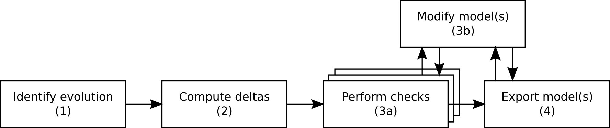

The components that provide the support for analyzing evolution models are shown in Figure 1.

Evolutions to a model can be reflected by collections of change descriptions. A change consists of one or more exclusive alternative evolutions to a part of the model. These alternatives can then be broken down to one or more delta elements, which describe atomic changes to model elements. More specific, we support the description of the addition, deletion, substitution, editing and copying of model elements. The content of an alternative will be applied in a single evolutionary step.
Changes can be constrained using the three constraint types AND, NOT and REQ. While AND forces another change to be applied simultaneously, meaning during the same evolutionary step of the model, NOT excludes the referenced change from being applied to the model in the same evolution. Finally, REQ ensures that the referenced change is applied to the model before the constrained change takes place. This is to ensure that dependent changes are applied in the correct order.
CARiSMA provides an interface to generate change descriptions (see Figure 2, Step 1). At the time of writing, two implementations of this interface are incorporated into CARiSMA: the UMLchangeParser, which creates the change descriptions from UMLchange applications on the model, and the EMFDelta, which generates the change descriptions by computing the difference between the original and the evolved model using EMF Compare.
A delta is a set of the above mentioned delta elements. The elements in the set are the atomic changes that amount to a possible evolution to the model. The delta factory (Step 2) receives a collection of change descriptions and processes the change constraints and alternatives, thereby generating all possible permutations over the alternatives, including the empty set, while following the constraints imposed by the changes. The elements of each valid change permutation are stored as a delta.
A delta can be applied to the model using implementations of the IModifier interface (Step 3b). An existing implementation is the UMLModifier. The UMLModifier receives the original model, creates a copy of it and applies each atomic change described by a delta element to the model copy. The resulting model is stored for use in CARiSMA evolution-aware checks (Step 3a). To avoid unnecessary computation of model modifications, the models are lazily initialized only when a check needs the modified model for validation. Modifications are mainly executed via generic EMF methods, while the selection of UML-specific aspects are handled using a custom logic. It would therefore be easy to build other model-specific modifier implementations.
The existing CARiSMA evolution checks each receive the list of computed deltas and iterate over each while checking the validity of the delta's modifications. If any change leads to the model not respecting the checked security property, the corresponding delta is removed from the list to prevent subsequent checks from unnecessarily checking this delta again.
The evolved models which passed all checks can then be persistently stored using the ModelExporter (Step 4). Their corresponding deltas can also be stored in an XML format alongside the models.